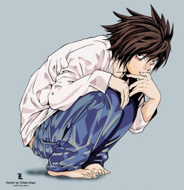
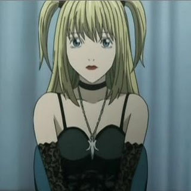
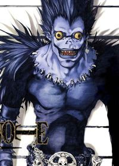

L
Saiba mais
detetive de consultoria internacional enigmático.
Light Yagami
Saiba mais
é um estudante entediado de 17 anos, extremamente inteligente. Quando ele encontra o Death Note, caído no mundo humano pelo shinigami Ryuk, ele decide usar para matar todos os criminosos e por suas ações ganhou o título de Kira. Seu objetivo é "limpar" o mundo do mal para criar um mundo sem criminalidade e então se tornar o "deus do novo mundo"

Misa Amane
Saiba mais
é uma modelo e atriz que adquiriu o Death Note que foi de Gelus através de Rem. Ela queria encontrar Kira por ter matado o assassino dos pais dela e ficou apaixonada por ele.

Ryuuku
Saiba mais
Ryuk é um shinigami ("deus da morte", em japonês). Um dia, de tão entediado que estava no mundo dos shinigamis, deixou cair seu Death Note ("caderno da morte", em inglês) na Terra.